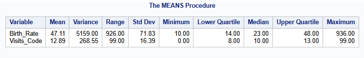
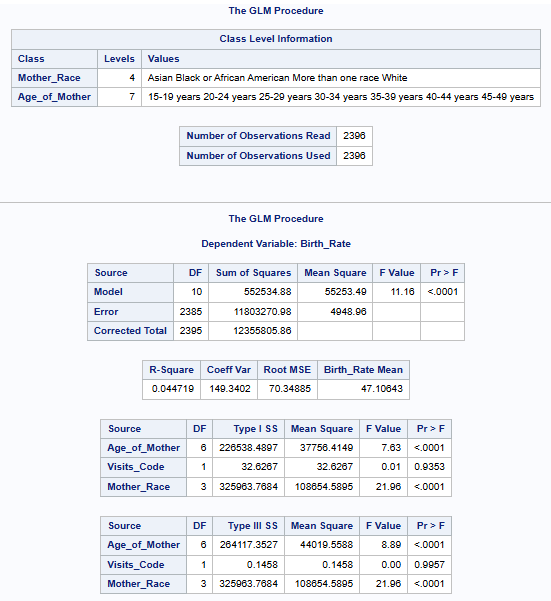

I investigated the relationship between the age and race of mothers, the number of prenatal visits and the average number of cesarean deliveries in Texas for 2022. Specifically, how the independent variables—Age of Mother, Prenatal Visits, and the Race of the Mother—affect the dependent variable, cesarean birth rate.
Background Info:
In 2021, around a third of US births were C-sections, a surgical procedure even for low-risk cases. Unnecessary C-sections can harm mothers and babies more than natural births. Overuse is due to differing medical practices and a casual approach to surgery.
The American College of Obstetricians and Gynecologists found slow labor progression to be a common reason for first-time C-sections. Encouraging natural births for low-risk women could reduce these unnecessary procedures, improving health outcomes.
Data Source:
For this, I grabbed some data on cesarean deliveries from the CDC WONDER online database.
Query Parameters included:
Final Route and Delivery Method: Cesarean
Number of Previous Cesareans: 0 previous cesareans; 1 previous cesareans; 2 previous cesareans; 3 previous cesareans; 4 or more previous cesareans
States: Texas (48)
Year: 2022
Group By: County of Residence; Mother’s Single Race 6; Age of Mother 9; Number of Prenatal Visits
Show Totals: Disabled
Show Zero Values: Disabled
Show Suppressed: False
Calculate Rates Per: 1,000
Step 3: Examine the data and check the distribution
The Means Procedure
proc means data= work.cdelivery mean var range stddev min q1 median q3 max maxdec= 2;
var birth_rate visits_code; *numeric variables;
run;
I examined the data by checking the distribution of key variables, and found the following:
On average, the cesarean birth rate is 47.11 per 1,000 live births.
The large variance (5159) indicates the birth rate values are spread out over a wide range.
This observation carries over to the standard deviation Std Dev. As the Std Dev is greater than the mean (71.83>47.11) this tells me that the data is further away from the mean, is highly skewed, and has outliers.
The Std Dev is calculated as the square root of the variance.
The distribution of the data is most likely positive or right-skewed with a long tail towards higher values. This is seen as the mean (47.11) is to the left of the maximum value in the dataset (936.00).
Mothers had an average of 13 (12.89) prenatal visits throughout their pregnancy.
Compared to the cesarean birth rate, the variance for prenatal visits (268.55) is less spread out in the dataset.
As seen before with the birth rate, the Std Dev for prenatal visits is higher compared to the mean (16.39>12.89).
The distribution of prenatal visits appears to be moderately spread, with a Std Dev (16.39) greater than the mean (12.89). The maximum value (99.00) suggests some outliers, but the majority of observations are found around the mean (12.89).
The Freq Procedure
proc freq data= work.cdelivery;
tables age_of_mother mother_race/ plots=(freqplot); *categorical variables;
run;

White mothers are the majority group, representing 72.12% of the total population, followed by Black or African American mothers at 19.12%.
The largest age group is 30-34 years, with 27.34% of the mothers, followed closely by 25-29 years at 24.87%.
Step 4: Use Proc GLM to model Birth Rate as a continuous dependent variable, and include the independent variables (Age of Mother, Visits Code, and Mother Rate)
proc glm data=cdelivery;
class Mother_Race Age_of_Mother; *categorical variables;
model Birth_Rate = Age_of_Mother Visits_Code Mother_Race; *Main effects model;
means Age_of_Mother / tukey; *Post-hoc tests to check significant differences
between age groups;
run;
So what does the model tell us about observing the age of mother, the mother’s race and the number of prenatal visits for predicting cesarean birth rates?
The model explains less than 5% of the variation in cesarean birth rates, according to its R-Square of 4.47%.The difference in birth rates is not well supported by the factors I selected from the dataset: the mother’s age, race, and number of prenatal visits.
With a p-value <.0001, the model is statistically significant overall, indicating that these predictors collectively have a meaningful relationship with the birth rate. However, the low R-squared value suggests that the majority of the variance in the birth rate cannot be explained.
The age of the mother has a significant impact on birth rate (F = 8.89, p < .0001), meaning birth rates likely vary across different age groups. Similarly, mother’s race also significantly affects birth rate (F = 21.96, p < .0001), suggesting birth rates differ among racial groups. However, the number of prenatal visits doesn’t appear to be a meaningful predictor here (p = 0.9957), as it doesn’t show any significant influence on birth rate.